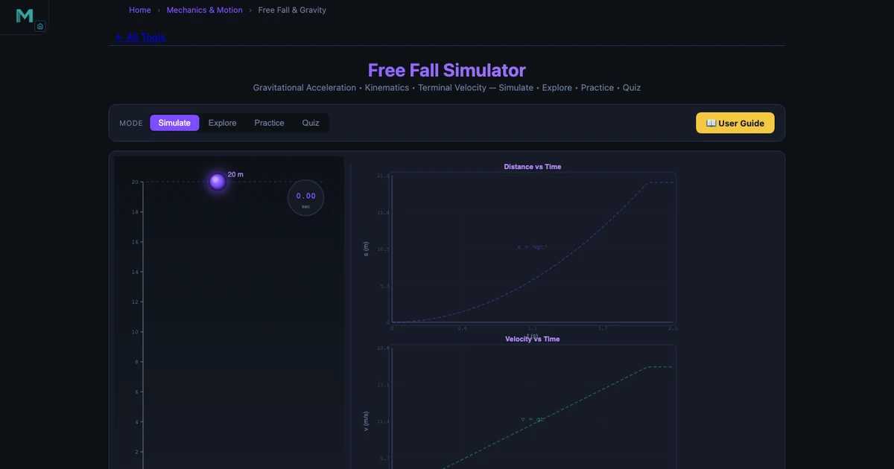
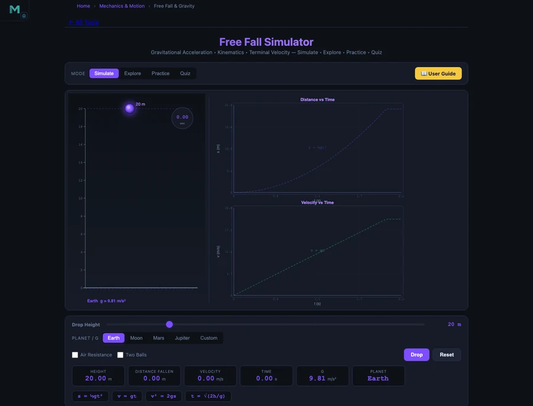

Online Teaching Challenges in Physics Education — How Virtual Labs Fill the Gap

- The six core online teaching challenges in physics are: no physical demonstration, students disbelieving theory without evidence, invisible forces (gravity, friction, tension), single-run experiments, assessment without observed practical work, and lost motivation without active engagement.
- Free virtual labs close the gap by making physics predictable and verifiable — e.g. the Free Fall Simulator shows s = ½gt² and v = gt, so after 4 s on Earth (g = 9.81 m/s²) an object falls 78.48 m and reaches 39.24 m/s, numbers students compute then confirm.
- The same 4-second fall covers 78.48 m on Earth, 12.96 m on the Moon, 29.76 m on Mars, and 198.32 m on Jupiter, because surface gravity follows g = GM/R² for each body.
Physics has always been the subject that separates the students who trust evidence from the students who just memorise formulas. In a physical lab, a dropped ball settles the argument. The ball does not lie. Gravity is 9.81 m/s² on Earth because every ball ever dropped on Earth has confirmed it. When you move physics online, you lose the ball. You have the formula, the worked example, and the student’s willingness to believe you. That willingness is fragile. And the online teaching challenges in physics education grow directly out of that fragility.
Here is what actually works.
Why Physics is Uniquely Difficult to Teach Online
Physics is an experimental science at its core. Every major concept — from Newton’s laws to Faraday’s law of induction — was discovered by someone who did something physical and observed a result. The theory came second. Online teaching delivers the theory first and the evidence never, which reverses the natural order of how physics understanding forms.
There is a specific kind of student who finds this particularly damaging. They understand the formula. They can substitute numbers. But when you ask them “why does a heavier object fall at the same rate as a lighter one?” they hesitate. They never dropped both and watched. The equation is correct in their notes, but the conviction is absent.
Six Challenges Every Physics Instructor Encounters Online
Challenge 1 — No physical demonstration. Dropping objects, swinging pendulums, colliding trolleys — these are the moments that make physics memorable. Without them, the subject becomes a collection of equations with no anchoring experience.
Challenge 2 — Students do not believe the theory. This sounds dramatic, but it happens. A student who has never seen projectile motion will often insist the heavier ball lands first. Without a physical experiment to contradict them, the instructor has only assertions. Assertions do not shift deep intuition.
Challenge 3 — Invisible forces. Gravity, friction, tension, normal force — these are all abstractions. Free body diagrams are useful, but they show arrows, not forces. Students who struggle with this have nothing online to make the forces feel real.
Challenge 4 — Single-run experiments. In a physical lab, each experiment happens once. If a student is distracted or confused during the measurement phase, they miss it. Virtual simulators let students run the same experiment twenty times in different configurations, which is actually more educationally powerful than a single physical run.
Challenge 5 — Assessment without observation. Practical physics assessment used to be straightforward: watch the student set up the apparatus, observe them taking readings, check their calculation. Online, that observation layer disappears. Written tests measure only the formula-recall end of the learning spectrum.
Challenge 6 — Motivation without engagement. Physics students who cannot interact with the subject disengage fast. Watching a pre-recorded video of someone else dropping something is not physics education. It is consumption. Real learning requires active prediction, testing, and revision.
How the Free Fall Simulator Makes Kinematics Real
The Free Fall Simulator covers 16 concepts across four categories: gravity basics (Newton’s gravitation, g on different planets, weight vs. mass, weightlessness), kinematics (displacement, velocity, acceleration), dynamics (air resistance, terminal velocity), and applications (drop tower, timing falls, escape velocity, orbital speed). Each concept includes an animated diagram, the governing equation, a description, and a stepped worked example.
For kinematics, the key equations are:
\[s = \dfrac{1}{2} g t^2\]
\[v = g \cdot t\]
On Earth, g = 9.81 m/s². After exactly 4 seconds:
\[s = \tfrac{1}{2} \times 9.81 \times 4^2 = 0.5 \times 9.81 \times 16 = 78.48 \text{ m}\]
\[v = 9.81 \times 4 = 39.24 \text{ m/s}\]
Students calculate this first, then open the simulator to verify. The match is exact. That verification moment — my formula gives the same answer as the simulator — builds confidence in both the equation and the student’s own calculation ability. It is doing what the dropped ball used to do in a physical lab.
Comparing Gravity Across Planets — A Lesson That Sticks
The planet comparison feature of the Free Fall Simulator is one of the most pedagogically powerful tools in the entire NHIT VisualLab library. Students can apply the same 4-second free fall to Earth, Moon, Mars, and Jupiter and watch the numbers diverge dramatically.

The numbers after 4 seconds of free fall tell the story clearly:
\[s_{\text{Earth}} = 78.48 \text{ m} \qquad s_{\text{Moon}} = 12.96 \text{ m} \qquad s_{\text{Mars}} = 29.76 \text{ m} \qquad s_{\text{Jupiter}} = 198.32 \text{ m}\]
Jupiter’s fall is more than 15 times deeper than the Moon’s in the same time. That ratio is derived from first principles:
\[g = \dfrac{GM}{R^2}\]
where G = 6.674 × 10&sup-;¹¹ N·m²/kg², M is the planet mass, and R is the planet radius. The simulator makes this equation concrete: Jupiter is enormous but its radius is also large, and the resulting surface gravity is “only” 2.5 × Earth’s, not 300 ×. That is a genuine insight. Students who have done this exercise stop treating g = 9.81 as a magic constant and start understanding where it comes from.
This lesson also introduces the distinction between mass (constant everywhere) and weight (force, varies with g). Ask students: “An 80 kg astronaut walks on Mars. What is their weight?”
\[W = m \times g_{\text{Mars}} = 80 \times 3.72 = 297.6 \text{ N}\]
On Earth the same person weighs 784.8 N. On the Moon, 129.6 N. Their mass is 80 kg everywhere. That distinction — which trips up students at every level — lands clearly when they compute it themselves for a real planet rather than just reading a definition.
Designing a Physics Virtual Lab Session from Scratch
Start with prediction, not explanation. Before opening any simulator, ask students to predict the answer. “An object dropped from rest falls for 3 seconds. How far?” Write down all the predictions. Then open the simulator together and see who was closest. Predictions that are wrong are more valuable than ones that are right — they create the cognitive dissonance that makes the correct answer memorable.
Vary one thing at a time. The simulator lets you change gravity, time, or initial velocity independently. This is a controlled experiment in the purest sense. Give students a structured investigation: “Keep g constant at 9.81. Double the time from 2 s to 4 s. What happens to the displacement?” The answer — it quadruples, from 19.62 m to 78.48 m — demonstrates the square relationship in \(s = \frac{1}{2}gt^2\) more clearly than any algebraic substitution.
Connect to Newton’s laws. Free fall is Newton’s second law in its simplest form. A falling object has one force (W = mg downward) and one resulting acceleration (g). Once students are comfortable with free fall, extend to the Newton’s Laws Simulator for inclined planes and friction, where the net force is no longer just weight. The conceptual chain from free fall to inclined plane to F = ma in complex systems is one of the most important threads in applied physics.
Extend to projectile motion. Free fall is the y-component of projectile motion. Once students have verified \(s = \frac{1}{2}gt^2\) in the free fall simulator, they are ready for the Projectile Motion Simulator, which adds the horizontal component and shows the full parabolic trajectory. The conceptual bridge is clear and the numbers are consistent: the vertical motion in any projectile problem is just free fall with initial vertical velocity.
Try These Free Physics Simulators
All tools below are free — no account, no download, runs in any browser.
Key Takeaways
- Physics online teaching loses the most important thing: the experiment that produces evidence students trust. Virtual simulators restore that evidence loop by making predictions testable in seconds.
- The Free Fall Simulator covers 16 concepts including s = ½gt², v = gt, g on four planets, weight vs. mass, and terminal velocity with animated diagrams and stepped worked examples.
- After 4 s of free fall: Earth 78.48 m, Moon 12.96 m, Mars 29.76 m, Jupiter 198.32 m — a dramatic comparison that makes g = GM/R² concrete rather than abstract.
- The prediction-then-verify approach — ask students to calculate before opening the simulator — creates the cognitive dissonance that makes correct physics stick.
- Free fall connects directly to projectile motion (vertical component) and to Newton’s second law (F = ma with only W acting), giving instructors a single coherent thread through three major topics.
- NHIT VisualLab’s physics library covers free fall, projectile motion, Newton’s laws, SHM, vibrations, gyroscope, and more — enough for a complete TVET physics virtual lab programme, all free and browser-based.
Frequently Asked Questions
What are the biggest online teaching challenges in physics education?
The six biggest challenges are: loss of physical demonstration, students not believing the theory without evidence, the difficulty of visualising invisible forces, the inability to run experiments repeatedly, assessment without observed practical work, and students losing motivation without tangible engagement. Free virtual labs like the Free Fall, Projectile Motion, and Newton’s Laws simulators on NHIT VisualLab address all six by making physics interactive, repeatable, and self-verifiable.
How does the Free Fall Simulator help teach kinematics online?
The Free Fall Simulator visualises s = ½gt² and v = gt in real time, letting students drop objects on Earth (g = 9.81 m/s²), Moon (g = 1.62 m/s²), Mars (g = 3.72 m/s²), and Jupiter (g = 24.79 m/s²). After 4 seconds on Earth, s = 78.48 m and v = 39.24 m/s. On the Moon the same 4-second fall covers only 12.96 m. Students can verify each number from the formula themselves, building the link between equation and physical reality that online teaching often breaks.
How does gravity differ on the Moon, Mars, and Jupiter compared to Earth?
Earth surface gravity is 9.81 m/s². The Moon has g = 1.62 m/s² (about 1/6 of Earth), Mars has g = 3.72 m/s² (about 38% of Earth), and Jupiter has g = 24.79 m/s² (about 2.5 × Earth). These values come from g = GM/R² for each body. After 4 seconds of free fall, objects travel 78.48 m on Earth, 12.96 m on the Moon, 29.76 m on Mars, and 198.32 m on Jupiter — a dramatic range that students can explore directly in the simulator.
Can physics experiments be effectively simulated online for TVET students?
For kinematics, dynamics, and mechanics — yes, virtual simulators are extremely effective. The Free Fall Simulator, Projectile Motion Simulator, and Newton’s Laws Simulator together cover all the core TVET mechanics and kinematics labs. Students can run the same experiment under different conditions in seconds, which is actually better than a single physical lab run. What is harder to simulate online is hands-on instrumentation skill, which still benefits from occasional physical access.
How do I make physics engaging for online learners?
The most reliable approach is comparative exploration before explanation. Ask students to drop the same object on Earth and Jupiter before you introduce Newton’s law of gravitation, and let them be surprised by the difference (78 m vs 198 m after 4 seconds). Ask them to predict what changes when they switch from Earth to the Moon, then verify. Physics becomes engaging when students are making predictions and checking them — and virtual simulators make that cycle fast enough to complete inside a single 90-minute session.
Physics loses something real when it moves online. But it gains something too: the ability to run the same experiment on four different planets in thirty seconds, or to show that Jupiter’s immense gravity produces only 2.5 × Earth’s surface pull because its radius also scales up. These comparisons are impossible in a physical lab. They are trivial in a virtual one.
Start your next online physics session with the Free Fall Simulator — ask for predictions first, verify together second, and let the numbers do the teaching.